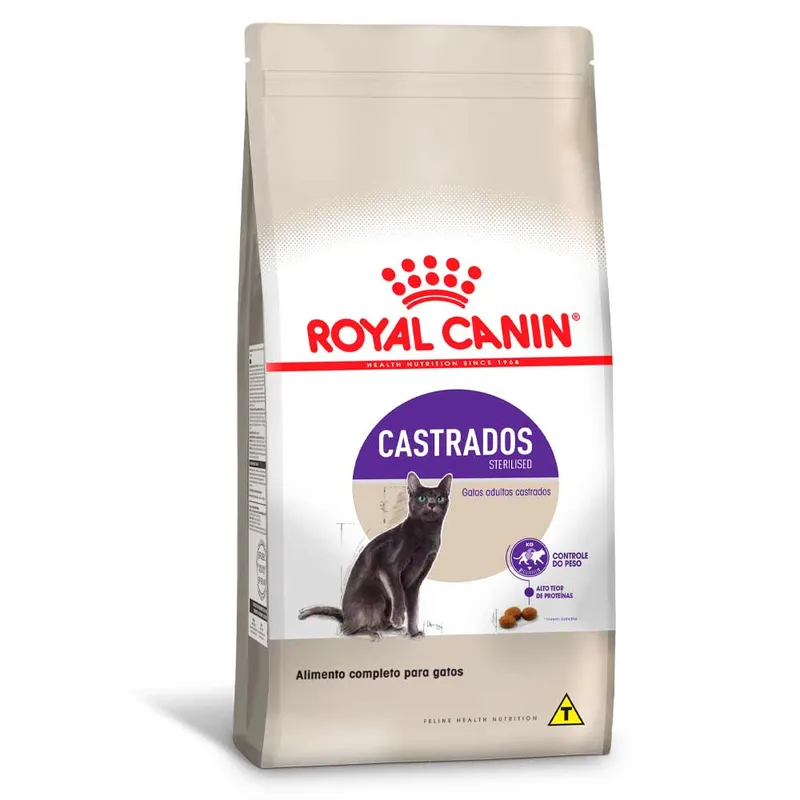
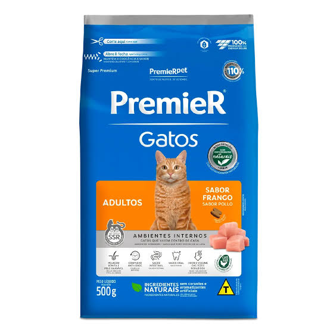
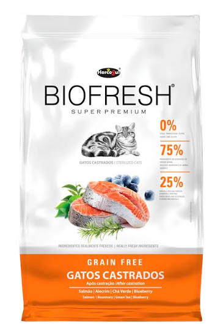

Apresentação dos nossos serviços
Boas-vindas ao Patas & Bigodes. O Patas & Bigodes é uma rede de amor dedicada a resgatar, reabilitar e conectar gatinhos vulneráveis a lares cheios de afeto. Acreditamos que cada bigode traz uma história única e o direito a uma segunda chance. O nosso trabalho vai além de encontrar um teto: nos dedicamos a transformar trajetórias de abandono em histórias de companheirismo e carinho para a vida toda.
Adoção Responsável
Cuidado
- Todo gatinho precisa de cuidado, amor e carinho com donos comprometidos e responsáveis em seu papel.
- Dar sempre bastante água, e comida quando necessário.
- Assegurar que o gatinho vai ter uma casa segura.
- Garantir que o seu gatinho vai ter uma residência tranquila e sem estresse para não elevar os níveis de cortisol do gatinho.
Entrevista
O possível futuro dono do gatinho vai ter uma entrevista com agentes do Patas & Bigodes para saber a sua situação financeira e garantir o melhor para os gatinhos.
Passo a passo de como dar comidinha para o seu gatinho lindo
- Pegar um pote de comida que esteja ao alcance do gatinho
- Comprar uma ração deliciosa e adequada para seu gatinho
-

Royal Canin - Nutrição especializada e alta palatabilidade. -

Premier Pet - Alimentos super premium e ingredientes selecionados. -

Hill's Science Diet - Nutrição baseada em ciência para cuidados específicos. -

Bio Fresh - Alta inclusão de ingredientes frescos e naturais.
-
- Pôr a ração no potinho, assegurando que tenha ração suficiente para ele não passar fome mas ao mesmo tempo suficiente para não ficar obeso.
- Guardar a ração.